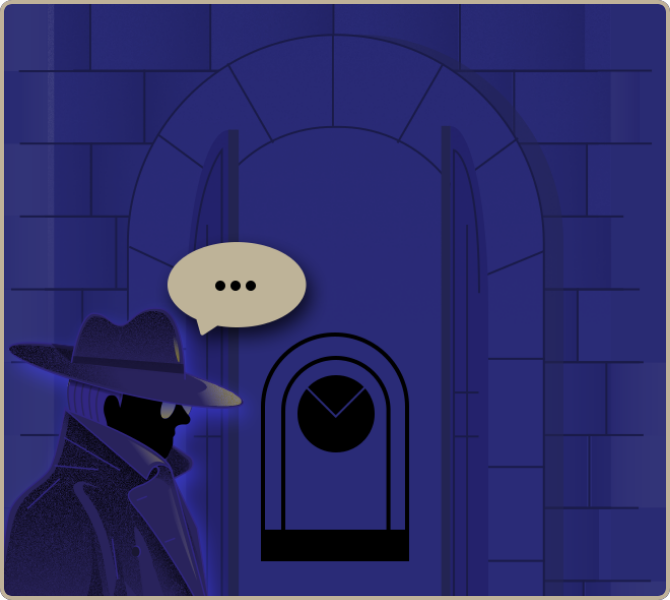

뒤로가기
#4 시간의 문을 지나

성문을 잘 살펴보면 이상한
괘종시계의 비밀을 알 수 있을 것이라네.
그 시간은 자네가 알고 있던 시간과는 달리
특별하게 흘러가고, 성문은 마치 괘종시계를
닮아서 앞과 뒤에서 문을 바라보면 서로 다른 시간을 알리고 있음을 발견 할 것이네.
이상한 괘종시계 모양을 잘 염두해 두시게나.
자,그럼 다음 장소로 가는 비밀을 풀어보시게. 후후
다음 시간을 참고하시게나.